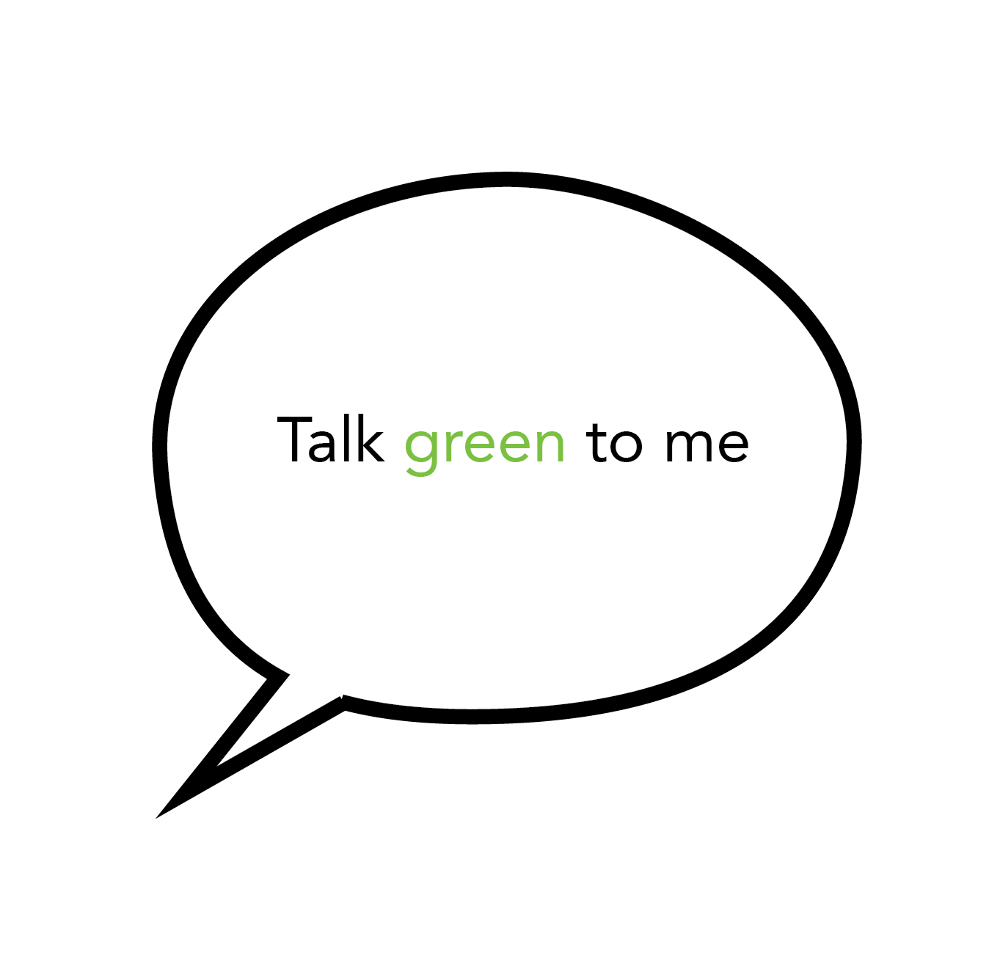

Tip drie

Inspiratie opdoen
Met kleine stappen kom je het verst en een kleine stap is zo gemaakt. Doe bijvoorbeeld eerst inspiratie op over de groene onderwerpen die je interesseren. Luister bijvoorbeeld naar een podcast, lees eens een groen boek of kijk films over ecologisch eten.